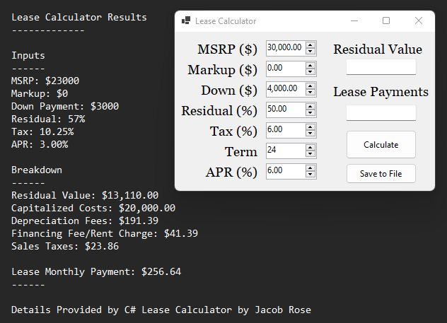
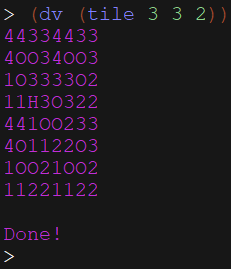

My portfolio website is my first major self-driven individual project!

I felt like I needed something to present myself. What better way to show myself than showing myself?
I wanted to create this website in order to show that I am capable of making simple yet effective websites in a short time period. For reference, this website was created over
the course of a week while working full-time. This website allows me to have something to come back to if I ever run out of project ideas.
This website was created using: HTML, CSS, JavaScript, Express, TailWind, and a few other dependencies.
Even in college, I continued to work with some of my high-school friends. We created a group known as Gauntic.
The main project that we worked on together was Coderigo. Coderigo is a developer social media platform which uses Typescript React, Express, Node, and MySQL.

Above is a picture of the comments on a sample post. I handled the initialization of the database as well as the queries to add more instances.
This front-end design as well as the posts were not created by me. Credits go to Elliot Topper for the front-end, back-end, and direction of the site.
My main contributions were in JavaScript and MySQL. I used queries to insert and use data within a database hosted locally.
This handled all of the users, posts, likes and even comments. I also formatted JSONs to be used in the front-end.
In 2020, I was the Java lead in a group of three to develop an application that won the 2020 Congressional App Challenge.
After conceiving the app, we initially prototyped in Adobe XD which allowed us to make a design that could fit a responsive interface.

I worked mostly in functionality. This includes the main framework of the application which includes the navigation, headers, and settings.
I also made final adjustments to the stylesheet of the views to ensure that they were responsive and functional. I was also the editor for the video submitted.
Click Here To Be Redirected to the Congressional App Challenge Winnner Post
In the Summer of 2022, I branched out to learn C#
At this time, I was working as an Internet Sales Representative for a car dealership so a lease calculator made sense to me.
This calculator is a Windows Form created in C# using basic mathematical functions.
I also implemented a save to file function with a detailed breakdown.
Click Here To Be Redirected to the Github Repo
I solved the classic Tiling the Courtyard problem in Scheme.
The problem is this: You have a 2^n unit length square grid with one hole. You must fill the table by placing 3 block pieces. I accomplished this task recursively.
This is done by placing a tile piece in the middle with the 3 piece pointing away from the hole then recursively splitting the four quadrants until you reach a 2x2 then filling.
The function will go to each quadrant, recursively fill the courtyard then put the quadrants back together. To display the information, I used numbers to indicate which quadrant
actually has a hole or preplaced tile in it with 'O' representing the middle tile pieces.
Here are a few basic programming problems I have solved:
Insertion Sort
Classic Insertion Sort: Place each item into an array by moving it backwards and inserting it into the right place.
This was solved by starting at the index of 1 and moving the item backwards until the item before it is not higher or the index is 0. Once this is done where the index is equal to the length-1 (When every element has been accounted for), the list will be sorted. I also added some prints that show which is the currently moving element as well as the steps to reach the sorted list. Test cases are included.
Click Here To Be Redirected to GitHubMerge Sort
Classic Merge Sort: Individually add each item of a given array from lowest to highest by merging.
This problem was solved using recursion to split the array into two, sorting them, then recombining them by traversing each of the two sorted arrays. The recursively split elements merge up and sort while merging until the array is sorted. One special case used is to return if the array has one or less values. The second special case is if every item in the array is the same. In this case, it would be best to save the time if the array or parts of the array are the same element adjacent to each other. I also added an optional parameter for tabbing over so the recursion is easier to see. Test cases are included.
Click Here To Be Redirected to GitHubStaircase Recursion Problem
Here is the problem: There's a staircase with N steps, and you can climb 1 or 2 steps at a time. Given N, write a function that returns the number of unique ways you can climb the staircase. The order of the steps matters. What if, instead of being able to climb 1 or 2 steps at a time, you could climb any number from a set of positive integers X? For example, if X = {1, 3, 5}, you could climb 1, 3, or 5 steps at a time. Generalize your function to take in X.
This problem was solved easily using recursion by iterating through all possibilities and adding 1 to the total if the path reaches n = 0 and stopping the operation if it goes over.
Click Here To Be Redirected to GitHub